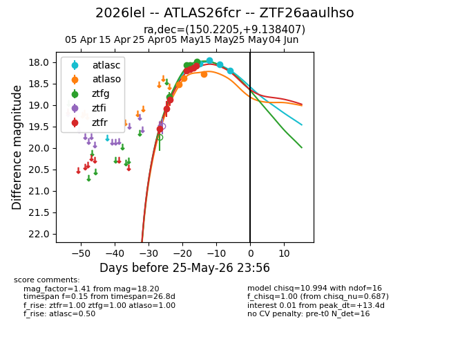
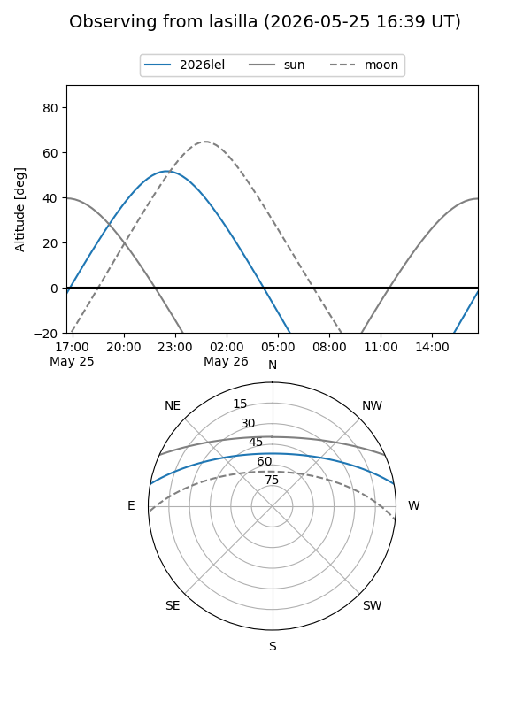
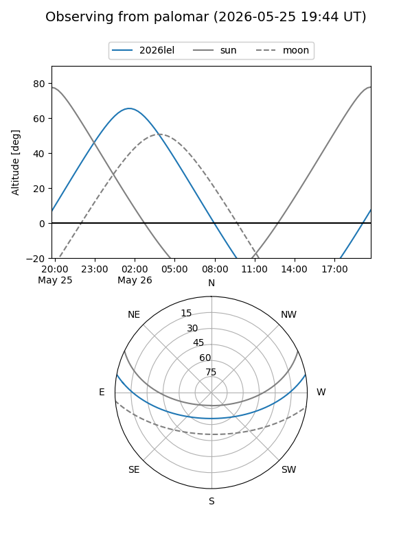
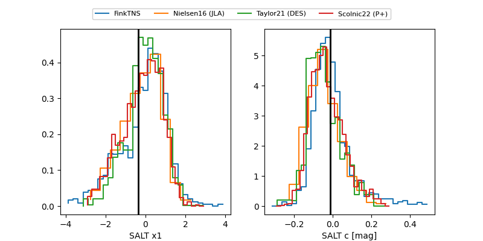

2026lel
Target 2026lel at 2026-05-25 23:58
Aliases and brokers:
lsst-FINK: link
lsst-Lasair: link
lsst-ALeRCE: link
ztf-FINK: link
ztf-Lasair: link
ztf-ALeRCE: link
TNS: link
YSE: link
alt names
ZTF26aaulhso (ztf,fink_ztf)
2026lel (tns,yse)
ATLAS26fcr (atlas)
Coordinates:
equatorial (ra, dec) = 150.2205,+9.13841
equatorial (HMS+DMS) = 10:00:52.92,+09:08:18.27
galactic (l, b) = (228.7785,+45.95689)
Flags:
Photometry:
last atlasc=18.20, atlaso=18.27, ztfg=17.99, ztfr=18.07
5 atlasc, 3 atlaso, 4 ztfg, 7 ztfr detections
Lightcurve

Visibility


Additional plots
